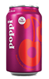
 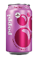
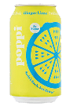
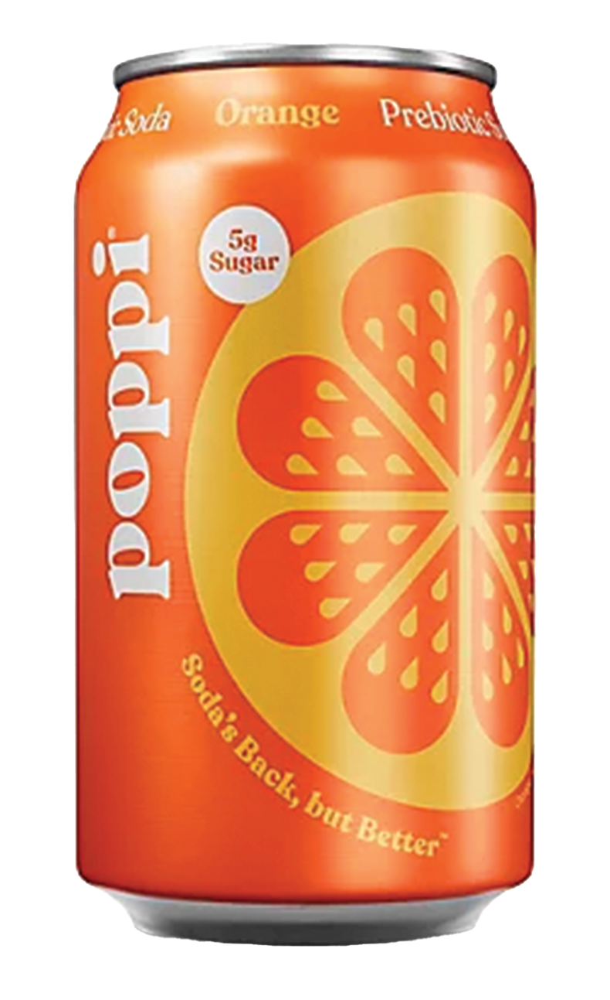
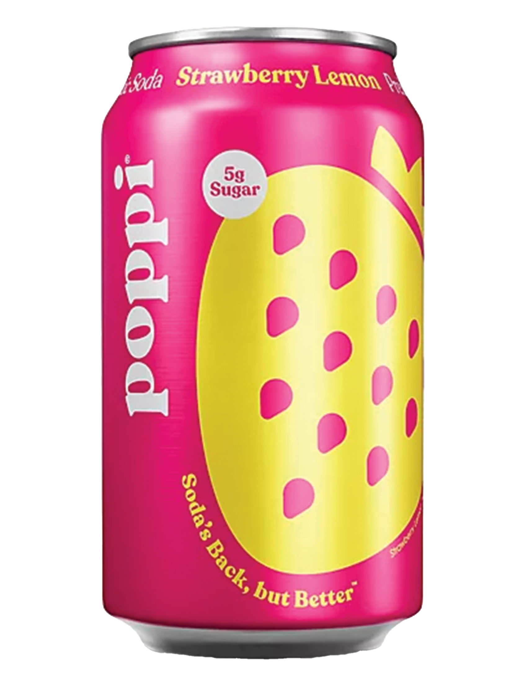
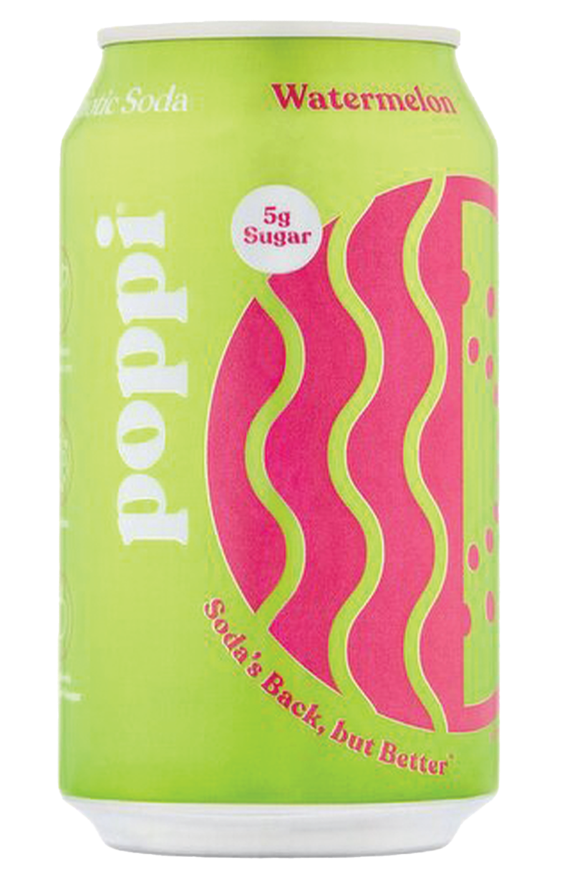
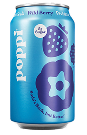
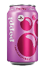
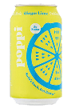
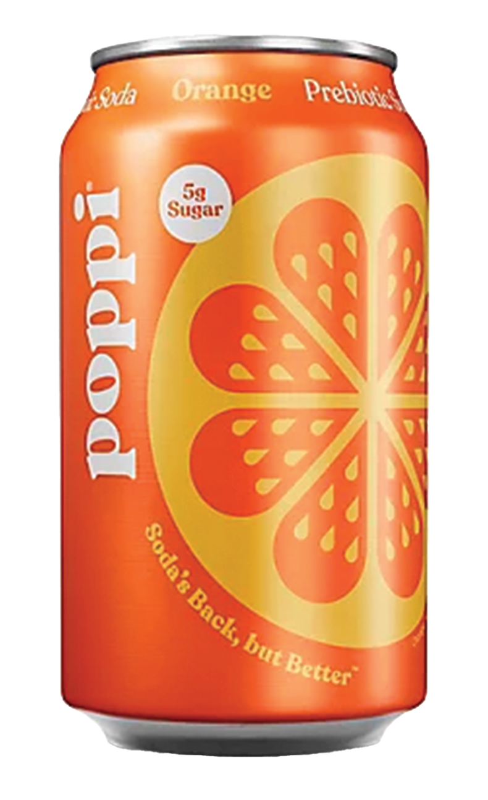
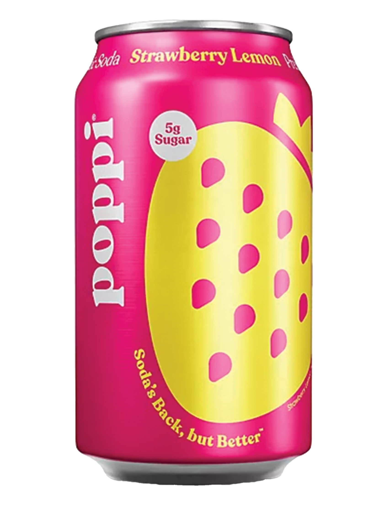
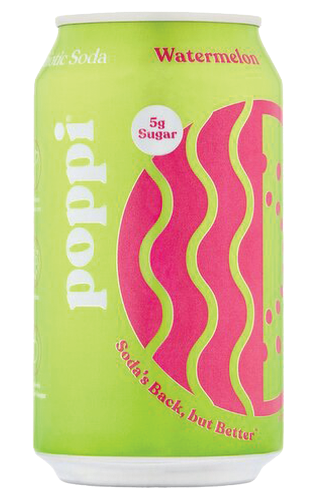
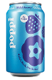
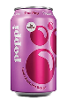
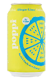
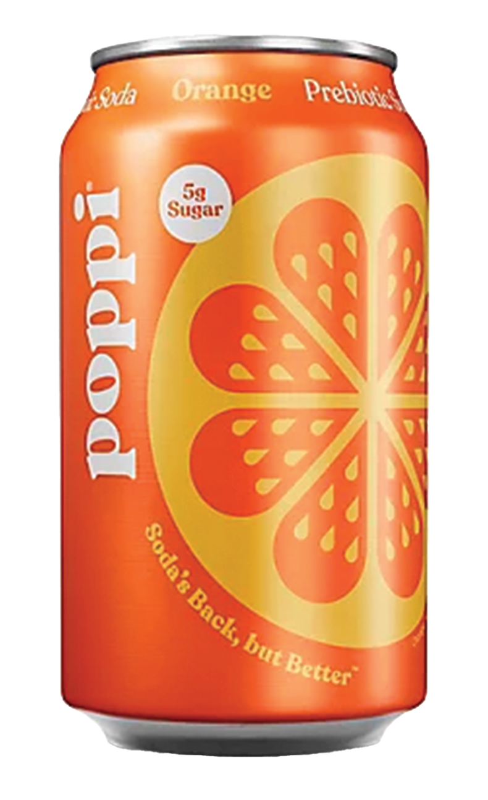
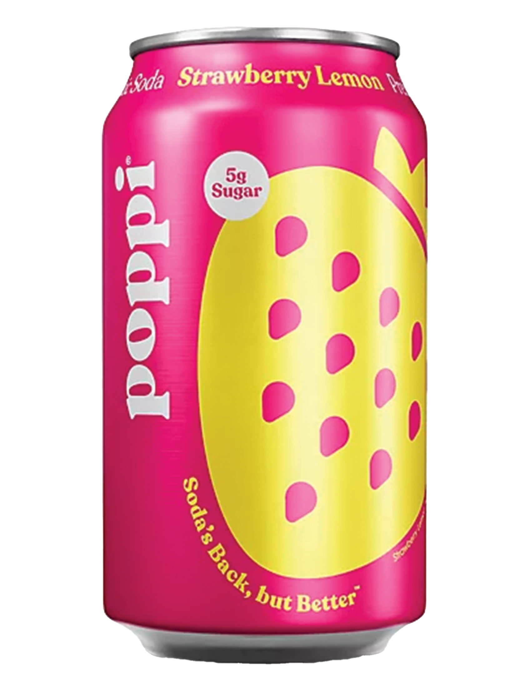
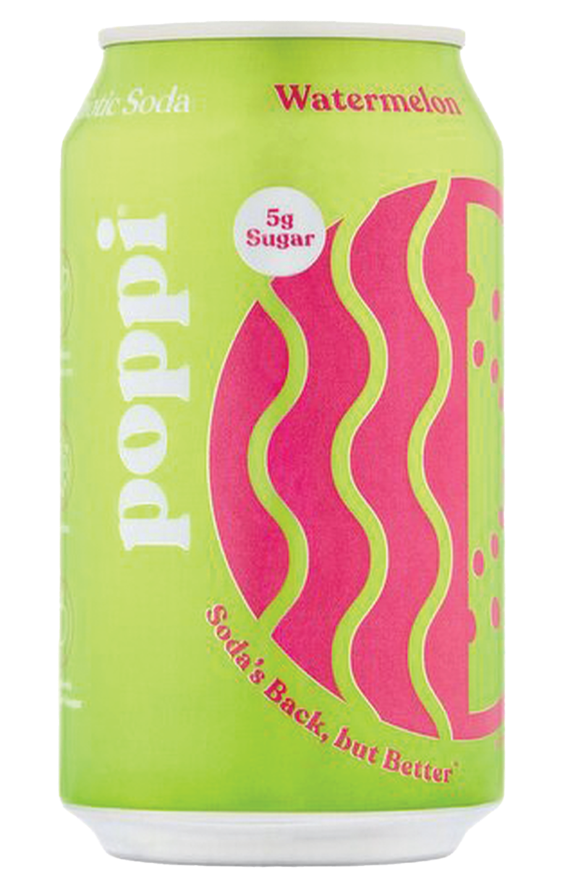
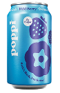

About Poppi
Poppi’s mission is to reinvent the soda experience by creating a delicious, better-for-you beverage that blends real fruit flavor with functional ingredients that support everyday wellness. Built on the belief that feeling good should taste good, Poppi combines refreshing carbonation with prebiotic fiber and apple cider vinegar to offer a modern alternative to traditional sodas. The brand is committed to transparency, clean ingredients, and vibrant, uplifting design that reflects a lifestyle centered on balance, confidence, and joy. Poppi strives to make wellness more accessible and enjoyable, empowering consumers to choose drinks that fit both their taste and their health goals.